IoT지식능력검정 (2017-05-21 기출문제)
1과목: 임의 구분
1. 사물인터넷 개념과 가장 거리가 먼 것은?
- 넓은 의미의 사물인터넷은 도메인 융합을 통한 산업의 지능화다.
- 사물인터넷은 단독 운용 혹은 단순히 물리적으로 두 사물을 연결하는 기술이다.
- 사물인터넷은 최근 갑자기 등장한 개념이 아니라 오래 전부터 존재해 왔으며 RFID/USN, M2M 등이 대표적인 개념들이다.
- 사물인터넷은 우리 주변의 사물들에 네트워크를 연결하고, 지능화함으로써 그 사물의 가치를 증대 시키는 것을 의미한다.
(정답률: 91%)

2. 기술적 측면의 사물인터넷 활성화 요인으로 거리가 먼 것은?
- 기술의 표준화
- 디바이스의 소형화
- 디바이스의 고성능화
- 디바이스의 고전력화
(정답률: 90%)
3. 아래 내용은 S-P-N-D-Se 관점에서 사물인터넷의 기능 중 무엇에 대한 설명인가?
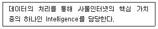
- Security
- Platform
- Network
- Device
(정답률: 65%)
4. 정보통신 분야의 표준은 정보통신망과 정보통신 서비스를 제공하거나 이용하는 주체끼리 합의된 규약의 집합으로 정의된다. 표준에 대한 설명으로 가장 거리가 먼 것은?
- 표준은 공통성, 호환성, 통일성 등을 갖춰야 한다.
- 공식적 표준은 공신력 있는 표준화 기구에서 일정한 절차와 심의를 거쳐 제정하는 표준이다.
- 공식적 표준화 기구들은 각 기구의 고유한 업무 경계가 있어 공동으로 작업하지는 않는다.
- 사실상 표준은 보통 기업 간 치열한 경쟁을 통해 시장에서 결정되는 시장표준이라고 할 수 있다.
(정답률: 78%)
5. oneM2M 기능 아키텍처에서 CSE(Common Service Entity)의 설명으로 옳은 것은?
- 단대단 사물인터넷 솔루션을 위한 애플리케이션 로직을 제공
- 사물인터넷의 다양한 애플리케이션 엔티티들이 공통적으로 사용 가능한 공통 서비스 기능들로 이루어진 플랫폼
- 공통 서비스 엔티티에 네트워크 서비스를 제공
- 장치 관리, 위치 서비스, 장치 트리거링 등의 서비스를 제공
(정답률: 62%)
6. 헬스케어 디바이스들의 다양한 데이터를 분석하고 헬스케어 및 의료 서비스로 이어주기 위한 플랫폼에 속하지 않는 것은?
- 헬스킷(HealthKit)
- 구글핏(Google Fit)
- 스냅샷(SnapShot)
- SAMI(Samsung Architecture Multimodal Interactions)
(정답률: 70%)
7. 아래 내용에 해당하는 사물인터넷 표준화 기구는?
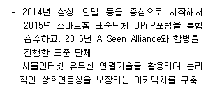
- oneM2M
- OCF(Open Connectivity Foundation)
- LoRa Alliance
- Thread Group
(정답률: 61%)
8. oneM2M의 아키텍처 레퍼런스 모델의 기본이 되는 계층 모델에 해당하지 않는 것은?
- Application Layer
- Common Services Layer
- Network Services Layer
- Device Services Layer
(정답률: 60%)
9. 아래 내용은 사물인터넷 응용분야 중 하나에 대한 설명이다. 아래 내용과 가장 가까운 분야는?
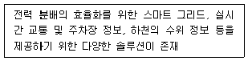
- 스마트홈
- 스마트시티
- 헬스케어 및 웰니스
- 유통 및 마케팅
(정답률: 86%)
10. 사물인터넷 플랫폼 기술 특징의 변화로 옳지 않은 것은?
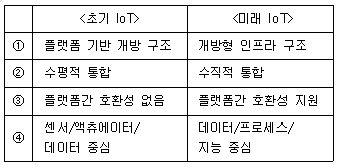
- ①
- ②
- ③
- ④
(정답률: 77%)
11. ISO/IEC JTC1에서의 사물인터넷 서비스 구조에 포함 되지 않는 것은?
- 사물(Things)
- 네트워킹(Networking)
- 플랫폼(Platform)
- 정보(Information)
(정답률: 67%)
12. 사물인터넷과 WSN(wireless sensor network)을 비교한 내용으로 옳지 않은 것은?
- WSN에서 센서 네트워크는 대부분 IP 네트워크를 전제로 하지 않는다.
- WSN에서 센서 네트워크의 센서노드 사이의 1, 2 계층은 지그비가, 3계층 이상은 IEEE 802.15.4가 대표적이다.
- 사물인터넷에서 디바이스들 사이의 네트워크는 IP 통신을 수용하는 흐름으로 진행한다.
- WSN의 응용 게이트웨이는 사물인터넷에서 더 이상 단말의 기능이 없는 네트워크 장비가 된다.
(정답률: 44%)
13. 사물인터넷 플랫폼 기술 중 사용자 또는 어플리케이션으로부터 특정 서비스를 요청 받았을 때 정의한 순서 및 명시된 서비스에 따라 서비스를 검색하고 이를 기반으로 서비스를 제공해 주는 기술은?
- Object profiling
- Service Choreography
- Semantic Annotation
- Trustworthiness management
(정답률: 69%)
14. 사물인터넷 플랫폼 기술 중 물리적 환경에 존재하는 다양한 사물의 정보를 플랫폼 또는 디바이스에 표현하기 위해 추상화된 리소스를 생성하는 것은?
- 장치관리 기술
- 사물 가상화 기술
- 서비스 컴포지션 기술
- 시맨틱 기술
(정답률: 81%)
15. 모비우스(Mobius), 앤큐브(&Cube), 씽플러스(Thing+) 및 EVRYTHING 등 국내외 사물인터넷 플랫폼에서 주로 사용하고 있는 Open API 방식은?
- XML-RPC
- SOAP
- RESTful
- Open Cloud Computing Interface
(정답률: 62%)
16. 사물인터넷 플랫폼 기술 중 장치관리 기술에 해당하지 않는 것은?
- OMA(Open Mobile Alliance) DM(Device Management)
- OMA LWM2M(Lightweight M2M)
- BBF(Broadband Forum) TR-069
- LoRa(Long Range)
(정답률: 71%)
17. 사물인터넷의 디바이스들이 통신을 수행함에 있어 제한적인 환경과 가장 거리가 먼 것은?
- 계측방식
- 대역폭
- 비용
- 전력소비
(정답률: 55%)
18. 사물인터넷 통신기술 중 Z-Wave에 대한 설명으로 옳지 않은 것은?
- 20⑤년 만들어진 Z-Wave 얼라이언스에서 개발한 홈오토메이션의 모니터링과 컨트롤을 위한 저전력 통신 기술이다.
- Wi-Fi, Bluetooth, Zigbee처럼 혼잡한 2.4GHz 주파수 기반의 통신 기술로, 간섭에서 자유롭지 못하다.
- 소스 라우팅 기반의 메시 네트워크 토폴로지가 적용되어 네트워크를 구성한다.
- 투과성이 좋으므로 벽이 하나 있어도 통신이 가능하다.
(정답률: 63%)
19. Wi-Fi 표준 중 다음 내용에 해당하는 것은?
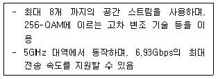
- IEEE 802.11a
- IEEE 802.11ac
- IEEE 802.11ad
- IEEE 802.11b
(정답률: 63%)
20. 저전력 블루투스(BLE, Bluetooth Low Energy)에 대한 설명으로 가장 거리가 먼 것은?
- 블루투스 스마트는 싱글모드로 구현된 제품을 상업적으로 구분하기 위해 사용하는 일종의 브랜드네임이다.
- 블루투스 스마트 지원 제품은 BLE 기능만을 구현하고 있어서 블루투스 클래식이라 불리는 기존의 블루투스 프로토콜과 호환되지 않는다.
- BLE만을 지원하는 블루투스 스마트 지원 디바이스들의 신호 전달거리는 100m 이상이다.
- 블루투스 스마트 지원 디바이스들은 전력 소모를 줄이기 위해 최대 전력 소모량을 15mA로 제한한다.
(정답률: 53%)
21. 블루투스 4.2 표준에 대한 설명으로 옳지 않은 것은?
- 기존 블루투스 4.1에 비해 2.5배 빠른 전송속도를 지원한다.
- 인터넷 프로토콜(IP)을 지원한다.
- 무제한 인터넷주소 체계인 IPv6와 저전력 무선통신기술인 6LowPAN을 적용할 수 있다.
- 디바이스들이 직접 인터넷에 연결되긴 하지만 와이파이와 같은 수준의 128bit AES 암호화 기술을 적용할 수는 없다.
(정답률: 70%)
22. NFC(Near Field Communication) 통신 기술에 대한 설명으로 옳지 않은 것은?
- 13.56 MHz대의 RFID(Radio Frequency IDentification) 기술을 발전시킨 접촉식 단방향 근접 통신 기술이다.
- 기존의 RFID와 달리 읽기와 쓰기가 가능하다.
- 10 cm안의 근접거리 통신기술이며 통신을 위한 준비 설정 시간이 거의 없다.
- 표준에서는 최대 424Kbps 전송속도를 가진다.
(정답률: 68%)
23. 지그비(Zigbee) 통신 기술에 대한 설명으로 옳지 않은 것은?
- 소형, 저전력, 저비용, 근거리 무선통신을 지향하며 IEEE 802.15.4 기반으로 구성된다.
- Zigbee Pro, Zigbee RF4CE, Zigbee IP의 3가지 통신기술을 공개하고 있다.
- Zigbee Pro는 Zigbee 2006 디바이스들과 호환되지 않는다.
- Zigbee RF4CE는 협력가전제품의 원격제어를 위한 규격으로서 스타토폴로지를 위한 간단한 스택을 정의한다.
(정답률: 63%)
24. 사물인터넷 전용망 통신기술의 핵심 요구사항으로 거리가 먼 것은?
- 고전력 소모 설계
- 대규모의 단말기 접속 구현
- 안정적인 장거리 커버리지 제공
- 단말기의 저가 공급을 통한 낮은 구축비용
(정답률: 82%)
25. Wi-Fi 표준 중 다음 내용에 해당하는 것은?
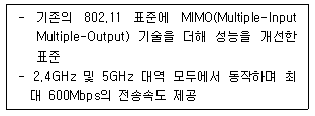
- IEEE 802.11g
- IEEE 802.11n
- IEEE 802.11v
- IEEE 802.11-1997
(정답률: 73%)
2과목: 임의 구분
26. 아래 내용에 해당하는 사물인터넷 디바이스 H/W 플랫폼은?
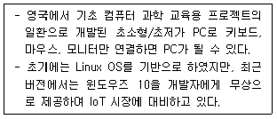
- 라즈베리파이
- 갈릴레오
- 링크잇원
- 큐리
(정답률: 78%)
27. HTTP(Hypertext Transfer Protocol)에 대한 설명으로 옳지 않은 것은?
- 사물인터넷 서비스를 위한 REST(Representational State Transfer) 아키텍처 모델에서 대표적으로 사용되는 프로토콜이다.
- 웹상에서 클라이언트와 서버 간 정보를 주고 받을 수 있는 어플리케이션 계층 프로토콜이다.
- 클라이언트와 서버 사이에 요청/응답 기반 데이터 교환 방식을 갖는다.
- 단순한 메시지 포맷을 바탕으로 네트워크 대역 및 배터리 소모가 작다는 것을 특징으로 해서 페이스북의 모바일 메신저 프로토콜로도 이용된다.
(정답률: 54%)
28. IoT를 구성하는 분야별로 칩벤더, 모듈/디바이스, 플랫폼/솔루션, 네트워크/서비스로 보안 위협을 분류할 수 있다. “칩벤더” 보안 위협과 가장 거리가 먼 것은?
- 부채널 공격
- 메모리 공격
- 악성코드 및 바이러스
- 역공학을 통한 버스 프루핑 공격
(정답률: 50%)
29. 기존 센서 기술과 비교하여 스마트 센서에 대한 설명으로 가장 거리가 먼 것은?
- 기능이 단순하고 정밀도가 낮다.
- 사용자에게 필요한 정보를 제공한다.
- 센싱소자와 신호처리가 결합하여 데이터 처리, 자동 보정, 자가진단, 의사 결정 기능을 수행한다.
- 센서와 마이크로프로세서 등의 신호처리 모듈을 결합한 형태를 갖는다.
(정답률: 82%)
30. 아래 내용에 해당하는 사물인터넷 응용계층 프로토콜은?
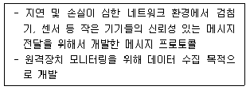
- MQTT(Message Queuing Telemetry Transport)
- UDP(User Datagram Protocol)
- CoAP(Constrained Application Protocol)
- XMPP(Extensible Messaging and Presence Protocol)
(정답률: 65%)
31. 아래 내용에 해당하는 사물인터넷 디바이스 S/W 플랫폼은?
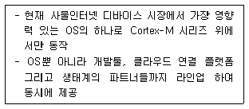
- nanoQplus
- mbed OS
- Contiki
- Linux
(정답률: 68%)
32. 아래 내용에 해당하는 사물인터넷 디바이스 S/W 플랫폼은?
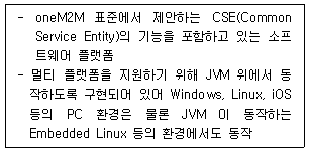
- &Cube
- IoTvity
- Android Things
- Tizen
(정답률: 69%)
33. 센서의 세대별(1세대 ~ 4세대) 발전 방향 순서를 나열한 것으로 옳은 것은?
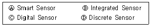
- Ⓓ → Ⓒ → Ⓑ → Ⓐ
- Ⓑ → Ⓓ → Ⓒ → Ⓐ
- Ⓑ → Ⓒ → Ⓓ → Ⓐ
- Ⓓ → Ⓑ → Ⓒ → Ⓐ
(정답률: 71%)
34. 사물인터넷의 보안에 대한 설명으로 가장 거리가 먼 것은?
- 사물인터넷 시대의 보안 및 프라이버시 이슈는 다양한 사물들에 대해 다양한 요소기술을 이용하여 연결하는 과정에서 발생한다.
- 사물인터넷은 다양한 요소기술들이 통합되어 서비스를 구성하므로 각 요소기술 자체의 보안 취약성과 이러한 요소기술들을 연동하는 과정에서 보안 취약성이 발생할 수 있다.
- 사물인터넷 서비스는 기존의 응용 서비스와 같은 수직적 시장(vertical market)의 특성을 가지기 때문에 단일 기업이 보안 취약성과 프라이버시 침해 문제에 대한 관리 및 사고 대응을 할 수 있다.
- 사물인터넷의 적용 대상을 단순히 사람뿐만이 아닌 다양한 사물, 물리적 공간 및 가상의 시스템에게 까지 확대하면서 사이버 공간에서의 해킹은 그대로 물리적인 공간의 위험으로 전이될 수 있다.
(정답률: 58%)
35. 아래 내용에 해당하는 센서는?
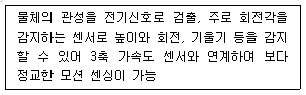
- RGB(Red-Green-Blue) 센서
- 지자기 센서
- 동작인식 센서
- 자이로스코프 센서
(정답률: 70%)
36. OSHW(Open Source Hardware)의 특징으로 옳지 않은 것은?
- 기술에 대한 라이선스가 없다.
- 제품 개발에 필요한 리소스는 공개되지 않는다.
- 부품을 직접 구매해 조립하기 때문에 완성형 또는 표준형 제품에 비해 가격이 저렴하다.
- 형태 변경을 통해 전혀 새로운 형태의 커넥티드 기기를 탄생시킬 수도 있다.
(정답률: 68%)
37. 빅데이터 분석을 위한 알고리즘에 대한 설명으로 옳은 것은?
- 군집화(Clustering) - 수많은 데이터들 중에서 어떤 특정한 성격을 가진 데이터군과 일정한 규칙에 따라 연결되는 다른 특정한 성격의 데이터군을 찾아내는 방법
- 감성분석(Sentiment Analysis) - 고객군을 비슷한 특성을 가진 소집단으로 묶어서 타겟 마케팅 그룹을 만들려고 할 때 활용
- 연관규칙 학습(Association Rule Learning) - 컴퓨터 기술을 응용하여 인간의 언어를 분석하는 자연어 처리 기술에 기반하여 웹을 포함한 텍스트 기반의 문서에서 글쓴이의 주관적인 감정을 나타내는 정보들을 찾아내 긍정/부정을 분석하여 글쓴이가 특정 주제에 대해 갖고 있는 성향을 파악하는 기법
- 회귀분석(Regression) - 어떠한 현상을 구성하는 종속변수 값의 변화가 하나 이상의 독립변수 값을 변화시키는지, 또 그렇다면 어떻게 변화시키는지의 여부를 찾아내는 분석 방법
(정답률: 57%)
38. IoT 공통보안 7대 원칙 중 “IoT 장치 및 서비스 운영/관리/폐기 단계"의 보안 요구 사항과 가장 거리가 먼 것은?
- IoT 제품/서비스의 취약점 보안 패치 및 업데이트 지속 이행
- 안전한 운영 관리를 위한 정보 보호 관리 체계 마련
- 안전한 소프트웨어 및 하드웨어 개발 기술 적용 및 검증
- IoT 침해사고 대응체계 및 책임추적성 확보 방안 마련
(정답률: 50%)
39. 빅데이터란 기존의 방식으로는 관리와 분석이 매우 어려운 데이터 집합, 그리고 이를 관리ㆍ분석하기 위해 필요한 인력과 조직 및 관련 기술까지 포괄하는 용어이다. 빅데이터에 관련된 내용으로 가장 거리가 먼 것은?
- 데이터 양(Volume), 다양성(Variety) 및 속도 (Velocity)로 빅데이터를 정의함.
- 유효성(Validity), 진실성(Veracity), 가치(Value), 가시성(Visibility) 등 다양한 형태로 빅데이터를 정의하기도 함.
- “기술의 한계로 과거에 무시했던 데이터를 분석하는 행위”라고 빅데이터를 폭 넓게 정의함.
- “컴퓨팅 환경은 전기, 수도 등 공공서비스를 사용하는 것과도 같을 것” 이라는 빅데이터 개념을 제시함.
(정답률: 38%)
40. 지능정보기술이 가져오는 변화 요소의 내용으로 가장 거리가 먼 것은?
- 유지와 관리 위주의 사전대응과 사후조치 중심
- 과학적 근거에 기반한 위험 예측과 지능적 예방 및 대응
- 개인 라이프 로그 정보 기반 맞춤형 헬스케어 관리 서비스
- 기계와 인간의 협업을 기반으로 새로운 가치와 혁신적 서비스 창출
(정답률: 72%)
41. 기존 분석환경과 비교하여 빅데이터 분석환경에 대한 내용과 가장 거리가 먼 것은?
- 비정형의 다양한 데이터
- Fact 중심의 다차원 분석 처리
- 통계 중심의 상관 관계 분석
- 클라우드 컴퓨팅 등 비용 효율적인 장비 활용 가능
(정답률: 72%)
42. 클라우드 서비스는 제공하는 자원의 레벨에 따라 3가지 모델로 분류할 수 있다. 다음 중 클라우드 서비스 모델로 옳은 것은?
- AaaS(Application as s Service)
- BaaS(Business as a Service)
- CaaS(Computing as a Service)
- SaaS(Software as a Service)
(정답률: 54%)
43. 클라우드 서비스 모델 중에서 IaaS(Infrastructure as a Service)에 대한 설명으로 옳은 것은?
- 이용자에게 서버, 스토리지 등의 하드웨어 자원만을 임대, 제공하는 서비스
- 소프트웨어 개발에 필요한 플랫폼을 임대, 제공하는 서비스
- 소프트웨어를 임대 제공하는 서비스
- 클라우드 서버상에 설치된 소프트웨어를 온라인상으로 제공하는 서비스
(정답률: 47%)
44. 호스트 컴퓨터에서 다수의 운영체제를 동시에 실행하기 위한 가상 플랫폼으로 가상머신 모니터(Virtual machine monitor, VMM) 라고도 하는 것은?
- 하이브리드(Hybrid)
- 하이퍼네트워크(Hypernetwork)
- 하이퍼바이저(Hypervisor)
- 모빌리티(Mobility)
(정답률: 80%)
45. 클라우드 서비스 구성에 의한 특징으로 효율적인 자원의 활용을 위해 물리적인 자원을 소프트웨어 기반으로 논리적으로 통합/재분배하여 사용할 수 있게 하는 것은?
- 확장성
- 가상화
- 정보위탁
- 단말 다양성
(정답률: 62%)
46. 아래 내용에서 ( ) 안에 들어갈 용어가 옳게 짝지어진 것은?
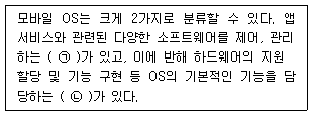
- ㉠ : GPOS(General Purpose OS), ㉡ : RTOS(Real Time OS)
- ㉠ : RTOS(Real Time OS), ㉡ : GPOS(General Purpose OS)
- ㉠ : SPOS(Special Purpose OS), ㉡ : GPOS(General Purpose OS)
- ㉠ : RTOS(Real Time OS), ㉡ : SPOS(Special Purpose OS)
(정답률: 60%)
47. 사물인터넷 비즈니스 모델 설계에서 ‘전략’ 과 ‘시장‘, ‘기술’ 의 테크노 비즈니스 3대 컴포넌트를 6개로 세분화하여 분석관점을 종합한 모델은?
- TISSUE 모델
- 비즈니스 모델 캔버스
- 5-Force 모델
- 혁신 모델
(정답률: 60%)
48. 비즈니스 생태계중 ICT 생태계와 관련해서 Fransman(2010) 연구를 대표적으로 들 수 있으며, Fransman은 기본 적인 계층 모델로 6개의 계층으로 구분된 생태계 계층모델로 분석하였다. 6개의 계층이 아닌 것은?
- 연결성(connectivity)
- 최종 소비(final consumption)
- 네트워크 운영(network operating)
- 소프트웨어 개발(software development)
(정답률: 57%)
49. 아래 내용에 해당하는 사물인터넷 비즈니스 모델은?
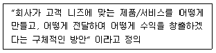
- TISSUE 모델
- 비즈니스 모델 캔버스
- 5-Force 모델
- 혁신 모델
(정답률: 77%)
50. 모바일 시대에서 사물인터넷 시대로 바뀔 때 나타나는 변화로 거리가 먼 것은?
- 핵심특징 : 기기의 스마트화 → 연결화
- 새롭게 만들어지는 경제 구도 : 앱 경제 → API 경제
- 중심이 되는 연결 형태 : 가벼운 연결 → 무거운 연결
- C-P-N-T중 지배적 영역 : OS → 웹
(정답률: 78%)